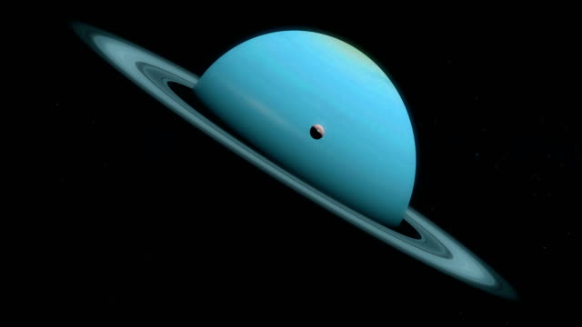
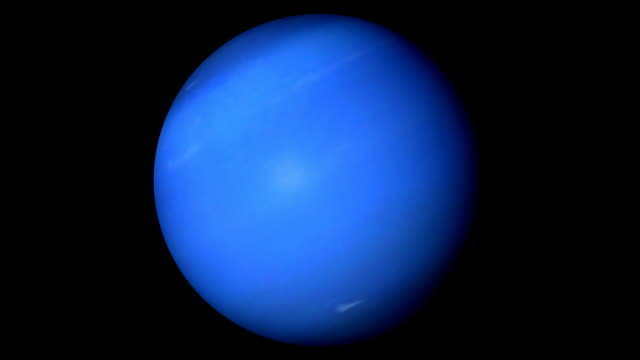

THIS IS OUR SOLAR SYSTEM
this i a video showing
the planets in our
solar system
PLANETS
A planet is a large astronomical body that is neither a star nor a stellar remnant. There are competing scientific
definitions of a "planet". In the dynamicist definition adopted by the International Astronomical Union (IAU), a
planet is a non-stellar body that is massive enough to be rounded by its own gravity, that directly orbits a star,
and that has cleared its orbital zone of competing objects. The IAU has also declared that there are eight planets
in the Solar System, independently of the formal definition. In the geological definition used by most
planetologists, a planet is a rounded sub-stellar body, possibly a satellite. In addition to the eight Solar
planets accepted by the IAU, these include dwarf planets such as Eris and Pluto and planetary-mass moons.
Bodies meeting the geological definition are sometimes called "planetary-mass objects" or "planemos" for short.
The term planet is ancient, with ties to history, astrology, science, mythology and religion. Apart from the Moon,
five planets are visible to the naked eye in the night sky. Planets were regarded by many early cultures as
emissaries of deities or as divine themselves. As scientific knowledge advanced, human perception of the planets
changed, and the invention of the telescope enabled the discovery of additional planetary objects that were diverse
in size, shape and orbit. In 2006, the IAU adopted a resolution limiting the number of planets within the Solar
System, though they are not followed by all astronomers, especially planetologists. The IAU resolution is
controversial because it excludes many geologically active planetary-mass objects due to where or what they orbit.
Ptolemy thought that the planets orbited Earth in deferent and epicycle motions. Although the idea that the
planets orbited the Sun had been suggested before, it wasn't until the 17th century that this view was supported
by the concrete evidence, in the form of telescopic observations performed by Galileo Galilei. About the same
time, by careful analysis of pre-telescopic observational data collected by Tycho Brahe, Johannes Kepler
discovered that the planets' orbits were elliptical rather than circular. As observational tools improved,
astronomers saw that, like Earth, each of the planets rotated around an axis tilted with respect to its
orbital pole, and that some shared such features as ice caps and seasons. Since the dawn of the Space
Age, close observations by space probes have found that Earth and other planets share additional characteristics
such as volcanism, hurricanes, tectonics and even hydrology.
The eight Solar planets in the IAU definition are divided into two divergent types: large low-density giant
planets and small rocky terrestrial planets. In order of increasing distance from the Sun, they are the four
terrestrials: Mercury, Venus, Earth, and Mars; and the four giants: Jupiter, Saturn, Uranus, and Neptune. Six
are orbited by natural satellites, the two exceptions being the innermost planets Mercury and Venus. Under
eophysical definitions, the classification is more complex: the Moon and Jupiter's moons Io and Europa are
additional terrestrial planets, but a large number of small icy planets are also added, such as the dwarf planets
Ceres and Pluto and the other large giant-planet moons such as Ganymede, Callisto, and Titan.
Mercury
The smallest planet in our solar system and nearest to the Sun, Mercury is only slightly larger than Earth's Moon.
From the surface of Mercury, the Sun would appear more than three times as large as it does when viewed from Earth,
and the sunlight would be as much as seven times brighter. Despite its proximity to the Sun, Mercury is not the
hottest planet in our solar system that title belongs to nearby Venus, thanks to its dense atmosphere.
Because of Mercury's elliptical egg-shaped orbit, and sluggish rotation, the Sun appears to rise briefly, set,
and rise again from some parts of the planet's surface. The same thing happens in reverse at sunset.
Venus
Venus is the second planet from the Sun and is Earths closest planetary neighbor. Its one of the four inner,
terrestrial (or rocky) planets, and its often called Earths twin because its similar in size and density.
These are not identical twins, however there are radical differences between the two worlds.Venus has a thick,
toxic atmosphere filled with carbon dioxide and its perpetually shrouded in thick, yellowish clouds of sulfuric
acid that trap heat, causing a runaway greenhouse effect. Its the hottest planet in our solar system, even though
Mercury is closer to the Sun. Surface temperatures on Venus are about 900 degrees Fahrenheit (475 degrees Celsius)
hot enough to melt lead. The surface is a rusty color and its peppered with intensely crunched mountains and
thousands of large volcanoes. Scientists think its possible some volcanoes are still active.Venus has crushing
air pressure at its surface more than 90 times that of Earth similar to the pressure you'd encounter a
mile below the ocean on Earth.
Earth
Our home planet is the third planet from the Sun, and the only place we know of so far thats inhabited by living things.
While Earth is only the fifth largest planet in the solar system, it is the only world in our solar system with liquid
water on the surface. Just slightly larger than nearby Venus, Earth is the biggest of the four planets closest to the Sun,
all of which are made of rock and metal.The name Earth is at least 1,000 years old. All of the planets, except for Earth, were named
after Greek and Roman gods and goddesses. However, the name Earth is a Germanic word, which simply means “the ground.”Earth has a
very hospitable temperature and mix of chemicals that have made life abundant here. Most notably, Earth is unique in that most of
our planet is covered in liquid water, since the temperature allows liquid water to exist for extended periods of time. Earth's
vast oceans provided a convenient place for life to begin about 3.8 billion years ago.Some of the features of our planet that
make it great for sustaining life are changing due to the ongoing effects of climate change.
Mars
Mars is the fourth planet from the Sun a dusty, cold, desert world with a very thin atmosphere. Mars is also
a dynamic planet with seasons, polar ice caps, canyons, extinct volcanoes, and evidence that it was even more
active in the past.Mars is one of the most explored bodies in our solar system, and it's the only planet where
we've sent rovers to roam the alien landscape.NASA currently has two rovers (Curiosity and Perseverance), one
lander (InSight), and one helicopter (Ingenuity) exploring the surface of Mars.Perseverance rover the largest,
most advanced rover NASA has sent to another world touched down on Mars on Feb. 18, 2021, after a 203-day journey
traversing 293 million miles (472 million kilometers). The Ingenuity helicopter rode to Mars attached to the belly
of Perseverance.
Jupiter
Jupiter, being the biggest planet, gets its name from the king of the ancient Roman gods.Jupiters environment
is probably not conducive to life as we know it. The temperatures, pressures, and materials that characterize
this planet are most likely too extreme and volatile for organisms to adapt to. While planet Jupiter is an unlikely
place for living things to take hold, the same is not true of some of its many moons. Europa is one of the likeliest
places to find life elsewhere in our solar system. There is evidence of a vast ocean just beneath its icy crust, where
life could possibly be supported.With a radius of 43,440.7 miles (69,911 kilometers), Jupiter is 11 times wider than
Earth. If Earth were the size of a nickel, Jupiter would be about as big as a basketball. From an average distance
of 484 million miles (778 million kilometers), Jupiter is 5.2 astronomical units away from the Sun. One astronomical
unit (abbreviated as AU), is the distance from the Sun to Earth. From this distance, it takes Sunlight 43 minutes to
travel from the Sun to Jupiter.
Saturn
Saturn is the sixth planet from the Sun and the second-largest planet in our solar system.Adorned with
thousands of beautiful ringlets, Saturn is unique among the planets. It is not the only planet to have rings
made of chunks of ice and rock but none are as spectacular or as complicated as Saturn'sLike fellow gas giant
Jupiter, Saturn is a massive ball made mostly of hydrogen and helium.

Uranus
Uranus is the seventh planet from the Sun, and has the third-largest diameter in our solar system.
It was the first planet found with the aid of a telescope, Uranus was discovered in 1781 by astronomer
William Herschel, although he originally thought it was either a comet or a star.It was two years later
that the object was universally accepted as a new planet, in part because of observations by astronomer
Johann Elert Bode. Herschel tried unsuccessfully to name his discovery Georgium Sidus after King George
III. Instead, the scientific community accepted Bode's suggestion to name it Uranus, the Greek god of
the sky, as suggested by Bode

Neptune
Dark, cold, and whipped by supersonic winds, ice giant Neptune is the eighth and most distant planet
in our solar system. More than 30 times as far from the Sun as Earth, Neptune is the only planet in
our solar system not visible to the naked eye and the first predicted by mathematics before its discovery.
In 2011 Neptune completed its first 165-year orbit since its discovery in 1846.NASA's Voyager 2 is the only
spacecraft to have visited Neptune up close. It flew past in 1989 on its way out of the solar system.